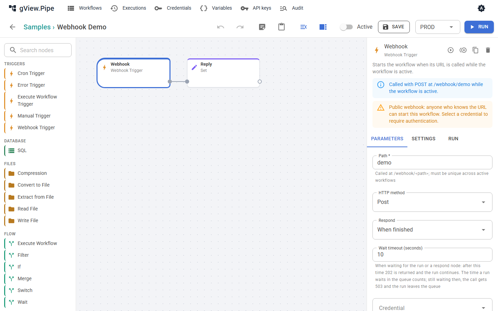

Trigger und Webhooks¶
Ein Trigger ist der erste Node eines Workflows. Er bestimmt, wann der Workflow startet.
| Trigger | Startet den Workflow |
|---|---|
| Manual Trigger | Wenn du ihn im Editor ausführst. |
| Cron Trigger | Nach Zeitplan (Cron-Ausdruck mit 5 oder 6 Feldern), solange der Workflow aktiv ist. |
| Webhook Trigger | Wenn seine URL aufgerufen wird, solange der Workflow aktiv ist. |
| Execute Workflow Trigger | Wenn ein anderer Workflow diesen mit dem Node Execute Workflow aufruft. |
| Error Trigger | Wenn ein Lauf eines anderen Workflows fehlschlägt (siehe Fehlerbehandlung). |
Webhook Trigger¶
Ein Webhook Trigger macht den Workflow unter dieser Adresse aufrufbar:
<Serveradresse>/webhook/<Pfad>
Der Editor zeigt die genaue URL als Hinweis neben den Parametern.

| Parameter | Bedeutung |
|---|---|
| Path | Buchstaben, Ziffern, _, - und /, klein geschrieben. Muss unter allen aktiven Workflows eindeutig sein. Für einen neuen Node wird ein zufälliger Pfad vorgeschlagen. |
| HTTP method | Standard POST, oder GET, PUT, PATCH, DELETE, oder jede Methode. |
| Respond | Wann und wie der Aufrufer eine Antwort bekommt (siehe unten). |
| Wait timeout (seconds) | Wie lange der Aufrufer in den wartenden Modi wartet. Danach bekommt er 202, und der Lauf geht weiter. |
| Credential | Basic Auth, Bearer Token oder API Key Header. Ohne Credential kann jeder, der die URL kennt, den Workflow starten. |
Warning
Ein Webhook ohne Credential ist öffentlich. Der Editor warnt dich davor.
Der Aufruf als Item¶
Der Trigger macht aus dem Aufruf ein Item:
{
"method": "POST",
"path": "orders/new",
"query": { "id": "7" },
"headers": { "content-type": "application/json" },
"body": { "customer": "ACME" },
"receivedAt": "2026-11-01T10:15:00.0000000+00:00"
}
- Ein JSON-Body (
Content-Typeenthältjson) wird inbodyzu einem Objekt. Formularfelder werden zu einem Objekt. Jeder andere Body ist Text. - Hochgeladene Dateien werden zu binären Anhängen des Items.
- Die Header
authorization,proxy-authorization,cookieund der API-Key-Header werden entfernt, damit Geheimnisse nie in der Execution-Historie landen. - Bodies über 10 MB werden mit
413abgelehnt.
Dem Aufrufer antworten¶
Der Parameter Respond bestimmt, was der Aufrufer bekommt.
| Modus | Der Aufrufer bekommt |
|---|---|
| Immediately | Sofort 202 mit { "executionId": …, "status": "started" }. Der Workflow läuft im Hintergrund. Ob er gelingt, erfährt der Aufrufer nicht. |
| When finished | Die Items des Nodes, der zuletzt fertig wurde: ein Item als Objekt, mehrere als Array. Schlägt der Lauf fehl, bekommt der Aufrufer 500. |
| Using respond node | Die Antwort eines Respond to Webhook-Nodes im Workflow. |
In beiden wartenden Modi bekommt der Aufrufer 202 mit "status": "running", wenn der Lauf länger als das Timeout dauert. Der Lauf wird nie abgebrochen, wenn der Aufrufer die Verbindung trennt.
Ist der Workflow ausgelastet und hat eine Warteschlange (Max queued runs im Workflow-Panel), wartet der Lauf auf einen freien Platz. Immediately antwortet dann mit "status": "queued". In den wartenden Modi zählt die Zeit in der Warteschlange zum Timeout: Wartet der Lauf bei dessen Ablauf noch, bekommt der Aufrufer 503 mit Retry-After, und der Lauf wird aus der Warteschlange genommen.
Respond to Webhook¶
Der Node Respond to Webhook sendet die Antwort im Modus Using respond node. Du wählst Statuscode, Header und Body:
| Parameter | Bedeutung |
|---|---|
| Respond with | Das erste Item, alle Items als Array, ein eigener Body oder kein Body. |
| Body | Für custom body: JSON oder ein Ausdruck, ausgewertet gegen das erste Item. |
| Status code | 100 bis 599. Unterstützt Ausdrücke. |
| Headers | Optionale Antwort-Header. Ein Text-Body mit einem Nicht-JSON-Content-Type (zum Beispiel text/html) wird unverändert gesendet. |
Die Items laufen durch den Node, der Workflow kann also nach der Antwort weitermachen.
Important
Die Antwort gibt es nur, wenn ein Respond-to-Webhook-Node läuft. Schlägt ein Node davor mit dem Fehlermodus Stop the execution fehl, endet der Lauf dort, der Respond-Node läuft nie, und der Aufrufer bekommt 500 mit der Fehlermeldung. Wie du auch im Fehlerfall antwortest, steht unter Einen Webhook nach einem Fehler beantworten.
Statuscodes¶
| Code | Grund |
|---|---|
| 200 | Antwort des Workflows (When finished) oder eines Respond-to-Webhook-Nodes. |
| 202 | Gestartet oder eingereiht (Immediately), oder das Timeout ist abgelaufen, während der Lauf weitergeht. |
| 400 | Der Header X-Pipe-Environment nennt ein Environment, das der Workflow nicht erlaubt. |
| 401 | Das Credential fehlt oder ist falsch. |
| 404 | Unter diesem Pfad gibt es keinen aktiven Webhook. |
| 405 | Die Methode passt nicht zum Trigger. |
| 413 | Der Body ist zu groß. |
| 429 | Der Workflow läuft schon, sein Limit für gleichzeitige Läufe ist erreicht (Standard 1), und seine Warteschlange ist voll oder ausgeschaltet. |
| 503 | Der Lauf wartete beim Ablauf des Timeouts noch in der Warteschlange und wurde aus ihr genommen. Versuche es nach Retry-After Sekunden erneut. |
| 500 | Der Lauf ist fehlgeschlagen oder endete, ohne einen Respond-to-Webhook-Node zu erreichen. Der Body enthält den Fehler und die Execution-Id. |
Der 500-Body sieht so aus: { "error": "…", "executionId": "…" }. Suche die Execution-Id in der Execution-Historie, um zu sehen, welcher Node fehlgeschlagen ist.
Das Environment wählen¶
Ein Webhook-Lauf nimmt das effektive Environment des Workflows (siehe Variablen und Environments). Damit Aufrufer ein anderes wählen können, etwa um ein System gegen die Testdatenbank zu testen, trage es im Workflow-Panel unter Webhook callers may choose ein. Der Aufrufer schickt dann den Header:
X-Pipe-Environment: TEST
Ein Environment, das dort nicht steht, wird mit 400 abgelehnt und nie still ersetzt. Der Header wird nach dem Credential geprüft; ein Aufrufer ohne Zugang erfährt also nichts über die Environments.
Ausprobieren¶
curl -i -X POST http://localhost:5240/webhook/demo -H "Content-Type: application/json" -d '{"name":"Ada"}'
In Windows PowerShell versteckt Invoke-RestMethod den Body einer Fehlerantwort. Nimm curl.exe -i (mit -k für das Entwicklungszertifikat auf https://localhost:7240), dann siehst du Statuscode und Body.